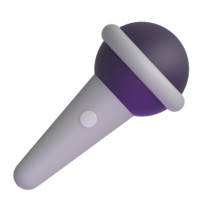

Singing
Whether I'm singing along to a favourite song or practising something new, singing always lifts my mood.
A small corner of the internet
I'm a student who likes trying new things, learning how stuff works and finding time for the things I enjoy. This is where I get to share a little bit of that.
A little about this page
I made this website to practise web development and to put a few things about myself in one place. Have a look around — you'll find some of the things that make my days interesting.
Things I enjoy

Whether I'm singing along to a favourite song or practising something new, singing always lifts my mood.
A good playlist can make an ordinary day feel a little better. I enjoy discovering new songs.
I like taking pictures of everyday moments, interesting places and things people might miss.
I'm learning how websites are made, one small experiment and one mistake at a time.
One thing to remember
“You don't have to know everything. You just have to be willing to learn something new.”Let's talk